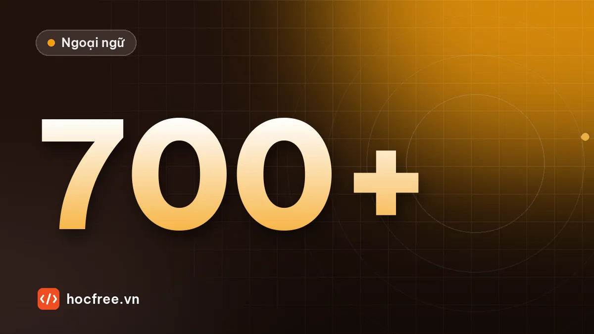

Dự án cuối khóa 700 TOEIC: thi thử và kế hoạch duy trì
Bài thi thử cuối khóa trong điều kiện thật, bảng so sánh với đầu vào, quyết định ngày thi theo điểm và kế hoạch giữ tiếng Anh sau khi đạt 700+.

Học xong bài này, bạn sẽ
- Thi thử đầy đủ đúng điều kiện thật
- So sánh với đầu vào để thấy tiến bộ
- Lập kế hoạch duy trì sau khi thi
Nên học trước: Đăng ký thi và chuẩn bị ngày thi
Nội dung bài viết
Đây là bài cuối cùng của lộ trình 700+ TOEIC. Dự án cuối khóa có ba phần: một bài thi thử đầy đủ trong điều kiện giống thật nhất, một bảng so sánh với bài thi đầu vào 5 tháng trước, và một kế hoạch giữ tiếng Anh sau khi thi. Phần cuối thường bị bỏ quên, nhưng nó quyết định việc 5 tháng học có thành kỹ năng dùng lâu dài hay chỉ là một con số trên chứng chỉ.
Phần 1: bài thi thử cuối khóa
Làm vào cuối tuần 3 hoặc đầu tuần 4 của tháng 5, với một đề chính thức chưa làm.
Mô phỏng ngày thi
- Thức dậy đúng giờ như ngày thi, ăn sáng như ngày thi.
- Bắt đầu đúng khung giờ của ca thi bạn đã đăng ký.
- Ngồi ở bàn trống, không điện thoại, không đồng hồ nếu phòng thi không cho mang.
- Dùng phiếu trả lời in sẵn và bút chì, không viết lên đề.
- Làm liền 2 giờ, áp dụng đầy đủ chiến thuật phòng thi.
Phần 2: so sánh với đầu vào
Lấy bảng phân tích bạn lập ở bài thi thử đầu vào và điền tiếp:
| Part | Đầu vào | Cuối khóa | Mục tiêu | Thay đổi |
|---|---|---|---|---|
| 1 | …/6 | …/6 | 5 | |
| 2 | …/25 | …/25 | 18 | |
| 3 | …/39 | …/39 | 28 | |
| 4 | …/30 | …/30 | 21 | |
| 5 | …/30 | …/30 | 24 | |
| 6 | …/16 | …/16 | 12 | |
| 7 | …/54 | …/54 | 35 |
Ngoài con số, so sánh thêm ba điều:
- Mã lỗi: lỗi nào đã gần như biến mất? Lỗi nào vẫn còn?
- Thời gian: lần đầu bạn làm tới câu bao nhiêu trước khi hết giờ? Bây giờ thì sao?
- Bản ghi âm: nghe lại bài nói 1 phút tháng 1 và bài ghi âm tình huống tháng 3.
Quyết định ngày thi theo kết quả
| Kết quả 2–3 đề gần nhất | Quyết định |
|---|---|
| Ổn định 700+ | Thi theo lịch. Tuần cuối chỉ ôn nhẹ |
| Dao động quanh 680–720 | Thi theo lịch. Điểm thật có thể nằm trong khoảng này, hãy giữ phong độ |
| Ổn định 640–680 | Cân nhắc lùi 2–3 tuần, luyện tiếp theo kế hoạch 4 tuần với 2 điểm yếu lớn nhất |
| Dưới 640 | Lùi 4–6 tuần. Quay lại chặng có Part yếu nhất, học lại bài lý thuyết và làm lại bài luyện |
Phần 3: kế hoạch giữ tiếng Anh sau khi thi
Không dùng thì tiếng Anh sẽ mai một nhanh. Chọn ít nhất 3 việc dưới đây và ghi vào lịch như một thói quen mới:
| Việc | Thời lượng | Lợi ích |
|---|---|---|
| Tiếp tục ôn Anki (không thêm nhiều thẻ mới) | 10 phút/ngày | Giữ vốn từ đã học |
| Viết email công việc bằng tiếng Anh khi có thể | Theo công việc | Dùng ngay những gì đã học |
| Nghe podcast hoặc bản tin tiếng Anh về ngành của bạn | 15 phút, 3–4 lần/tuần | Giữ tai quen tốc độ thật |
| Chủ động phát biểu một câu trong mỗi cuộc họp có người nước ngoài | Mỗi cuộc họp | Biến kiến thức thành phản xạ |
| Đọc một bài báo tiếng Anh mỗi tuần | 20 phút/tuần | Duy trì tốc độ đọc |
| Học tiếp TOEIC Speaking & Writing | Theo lộ trình mới | Có chứng nhận cả 4 kỹ năng, một số vị trí yêu cầu |
Bước tiếp theo sau 700+
- Mục tiêu 800+: tập trung vào câu từ vựng khó của Part 5, câu suy luận và đoạn ba của Part 7, và hội thoại ba người của Part 3. Từ vựng là yếu tố quyết định ở mức này.
- Giao tiếp thật: tìm cơ hội làm đầu mối với khách hàng hoặc chuyên gia nước ngoài trong công ty. Không bài luyện nào thay được việc dùng tiếng Anh hằng ngày.
- Kỹ năng chuyên ngành: đọc tài liệu kỹ thuật, tiêu chuẩn, hướng dẫn sử dụng máy bằng tiếng Anh, vốn là nơi phần lớn người đi làm cần tiếng Anh nhất.
Lời kết
Năm tháng, khoảng 150 buổi học, hàng nghìn thẻ từ vựng, vài chục bản ghi âm. Dù kết quả thi thế nào, bạn đã xây được một thói quen học mà rất nhiều người đi làm không giữ nổi quá ba tuần. Hãy ghi lại một dòng vào sổ: "Điều tôi tự hào nhất sau 5 tháng là…". Rồi đi thi với sự tự tin của người đã chuẩn bị kỹ.
Bài tập cuối khóa. Viết email (bằng tiếng Anh, 100–150 từ) gửi chính bạn của 6 tháng sau: điểm thi thử cuối khóa, 3 điều đã thay đổi trong cách bạn dùng tiếng Anh ở công ty, và 3 việc bạn hứa sẽ duy trì.
Xem bài mẫu
Subject: A note to myself – six months after the TOEIC
Hi Minh,
Today I scored 715 on my final practice test, compared with 430 five months ago. More importantly, I now join meetings with our Korean engineers without feeling nervous, I write my weekly report in English, and I can understand most phone calls with suppliers.
I promise to keep three habits: reviewing Anki for 10 minutes every morning, speaking at least once in every meeting, and reading one English article about manufacturing each week.
If you are reading this and have stopped, start again today. You've done it before.
Best regards,
Minh (October)